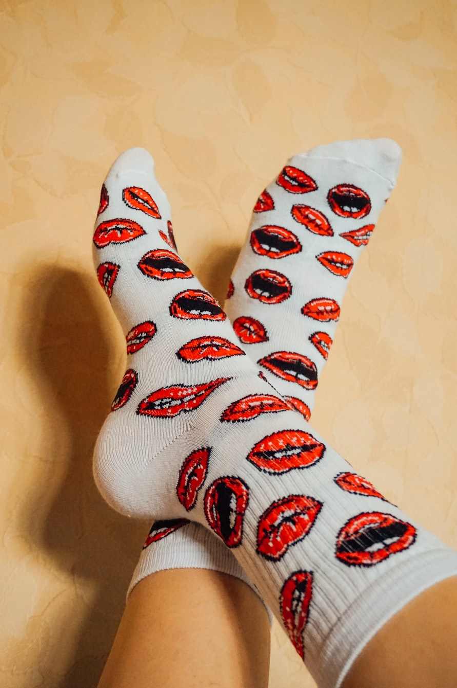
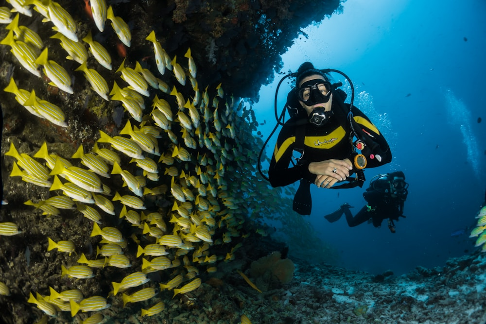

Fiber Science
Fiber Science
The Science of Bamboo Viscose: Moisture-Wicking & Thermoregulation
An exhaustive analysis of micro-gap capillary architecture, cross-sectional moisture transmission, and thermal equilibrium in hosiery.
Read Full Monograph → Knit Engineering
Knit Engineering
Anatomy of a 200-Needle Seamless Sock: Hand-Linked Toes & Arch Support
Deconstructing circular needle cylinder density, loop-by-loop hand linking, honeycomb arch bands, and blister biomechanics.
Read Full Monograph →
MicrobiologyNatural Antimicrobial Properties of Bamboo Kun: Combating Foot Odor
How the natural bio-agent Bamboo Kun inhibits Brevibacterium epidermidis and fungal growth without synthetic chemical antimicrobials.
Read Full Monograph → Ecology
Ecology
Eco-Textile Sustainability: Bamboo Closed-Loop vs Conventional Cotton
A life-cycle assessment comparing rain-fed bamboo cultivation with water-intensive GMO cotton and synthetic petroleum textiles.
Read Full Monograph → Sports Medicine
Sports Medicine
The Runner's & Hiker's Guide to Blister Prevention with Bamboo Socks
Examining kinetic shear stress, friction coefficients, terry loop density, and moisture management in endurance running and hiking.
Read Full Monograph →
Marine ConservationCoral Reef Conservation & Zero Microfiber Shedding in Sustainable Hosiery
Why synthetic polyester socks pollute oceans, and how natural plant cellulose hosiery protects marine coral reef ecosystems.
Read Full Monograph →